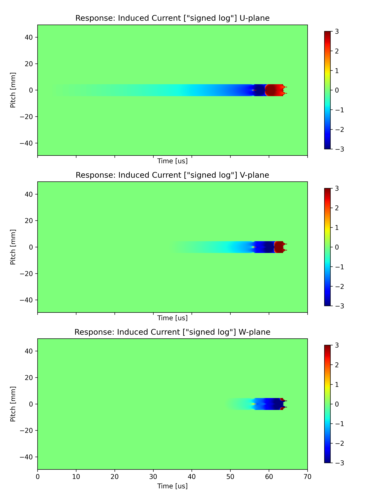
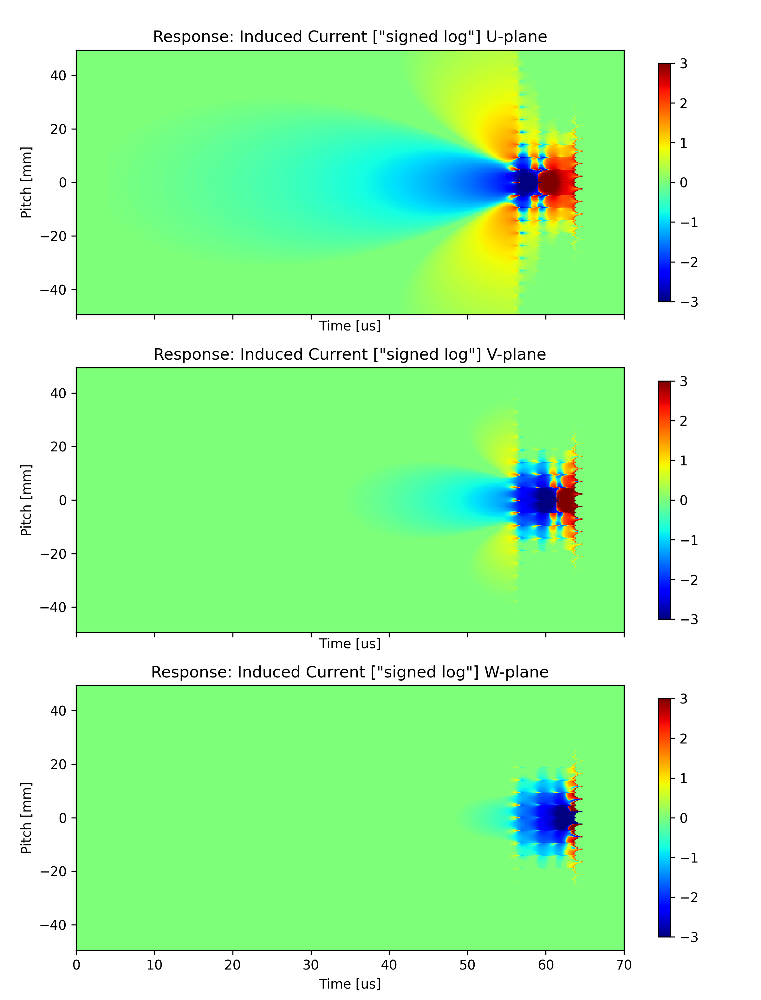
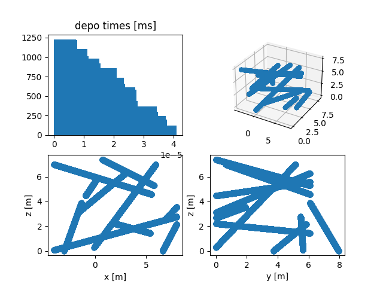
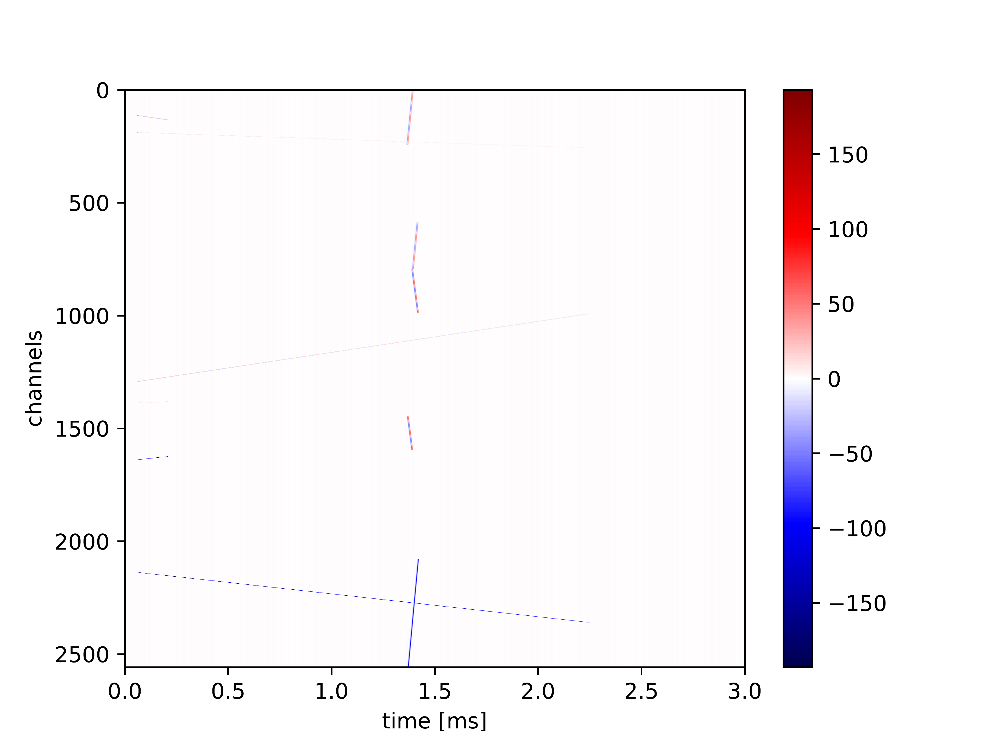
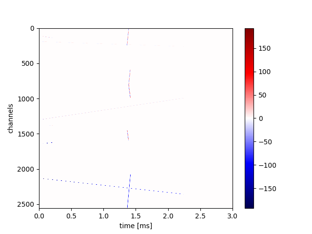
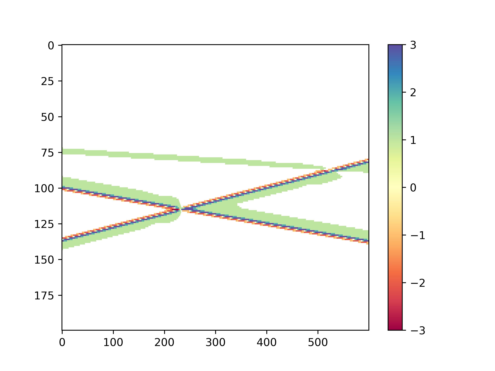

LS4GAN's Toy Zero
Table of Contents
Bare first steps toward LS4GAN. still work in progress
1 Goals
After some pre-requirements are met, this package automates the preparation for and running of various Wire-Cell Toolkit jobs in order to produce some initial datasets for initial exploration of the LS4GAN concept.
The final results are in the form raw ADC waveform arrays in per-channel rows of sampled columns. Each array spans one of three wire planes from one of six anode plane assemblies (APA) of the ProtoDUNE-SP detector.
There are two data sets real and fake. The real uses the full, best known 2D response model and the fake uses an intentionally wrong quasi-1D model which is derived from the 2D model by zeroing all responses except those for the central wire. (Note that this quasi-1D model is not the same of the even less accurate 1D model as it includes the variation within the central wire region.)
For this initial development we accept a number of simplifying "cheats" which we will rectify as we gain experience. They are at least the following:
- Use of simulation for both "real" and "fake". Eventually, "real" will be detector data and "fake" will from our best available simulation (currently 2D Wire Cell). We may use paired data for evaluating the technique in this stage but can not rely on it going forward.
- Our initial data tier is that of ADC waveforms and those from only ionization electrons from ideal tracks and in particular excluding noise effects. We eventually will use realistic track simulation (Geant4) and will include noise. When adding noise we will switch to a data tier of reconstructed signal waveforms. To produce them we will include noise models in the simulation and apply noise filtering to both the fake simulation and the real detector data just prior to applying signal processing.
2 Prepare
This package requires a few user environment settings to support use of Wire-Cell Toolkit and various Python packages. We will assume direnv is used to manage the environment. To use another environment management system, translate the contents of the example dot.envrc.
2.1 Environment
A one time setup of direnv:
$ cd toyzero $ cp dot.envrc .envrc $ emacs .envrc # edit to taste $ direnv allow
2.2 Check Wire-Cell Toolkit
The Wire-Cell Toolkit program wire-cell and its libraries are
required. See https://wirecell.bnl.gov/ for installation information.
Check if WCT is available with these commands:
$ wire-cell --help $ wcsonnet wirecell.jsonnet $ echo $WIRECELL_PATH
The WIRECELL_PATH should include at least the cfg/ directory provided
by WCT. This toyzero package provides additional configuration in
./cfg which will found automatically.
2.3 Python
The stand-alone wire-cell-python package, the snakemake program and
various other Python 3 packages are required.
$ cd toyzero $ pip install -r requirements.txt
Some checks:
$ wirecell-<TAB> $ wirecell-util --help $ snakemake --help
2.3.1 Hacking
The above installs WCT python for use. To develop that code without
having to go through many GitHub pushes we can leverage the direnv
environment for toyzero use:
$ git clone git@github.com:wirecell/wire-cell-python.git $ cd wire-cell-python/ $ pip install -U -e .
You can now hack on wire-cell-python and your changes are immediately made available.
3 Usage
Exercising toyzero will automatically download various files from Wire-Cell GitHub and run various programs.
This can take ten minutes or so depending on how fast your CPU is.
4 Details
Looking into the Snakefile one will see the all target aggregates a
number of all_* sub-targets.
4.1 resp
The all_resp target gets 2D WCT "response file" and derive from it
quasi-1D response file and make some diagnostic plots for each.
Visualization of q1D and 2D responses are generated and shown below. First "fake" q1D and "real" 2D. These show the instantaneous induced current (Z-axis) on a "wire of interest" for an that started at the transverse pitch direction (Y-axis) when it is at the moment of time (X-axis). Note, the current is in log10 units.


4.2 wires
The all_wires target gets WCT "wires file" and makes a multipage PDF
file with diagnostic plots at plots/wires-diagnostic.pdf. Most
of these pages may be too esoteric for most users and they
exhaustively cover all six protodune APAs. However, the pages showing
wire segments may be instructive.
4.3 depos
The all_depos target generates sets of ionization point depositions
for input to the WCT simulation. It produces a file:
data/{wire}-depos.npz
Where {wire} names the wires file. The file is in Numpy format with
arrays named like:
depo_data_<N> depo_info_<N>
The <N> counts a set of depos which are generated together (eg, an
"event"). The data arrays are 2D of shape (7, n) where n is the number
of depositions, O(1M). Each depo is a 7-tuple with elements:
- time
- number of electrons
- X position
- Y position
- Z position
- longitudinal extent (zero here)
- transverse extent (zero here)
Additional info arrays will be found in the file and can be
ignored here.
A simple summary diagnostic plot for the first "event" is generated showing distribution of depo times and the depo locations.

4.4 frames
The all_frames target generates "frame" data from depos by running the
Wire-Cell simulation. The "frame" file format is described elsewhere.
For here, we treat it as a temporary.
Diagnostic plots for each APA of the first event are made in PDF and PNG. Frame data is both very sparse and also very high resolution and this causes substantial problems for visualization. Default visualization often shows misleading artifacts.
- png
- at default DPI for
matplotlibexpect loss of visual data due to PNG resolution lower than data and due to zero or close to zero falling into the background color. Increasing DPI can help at the cost of larger files. - most likely to correctly represent that data. However beware of antialiasing that many PDF viewers apply to make images and text look "prettier". This will also obscure features and add artifacts.
As an example, compare the two images below. The first is a high-DPI
PNG rendering (by NETPBM) from the original PDF made by matplotlib and
the second is a PNG directly from matplotlib at its default DPI.

to the same data as PNG at default DPI from matplotlib:

Some tips to deal with resolution issues
- A PDF hint, if you want more zoom from your
evince:
❯ gsettings set org.gnome.Evince page-cache-size 2014
- Try different color maps. If the data has a large enough dynamic
range, consider a diverging color map with a white center (eg
"seismic"). If this places too many low values into the center
color bin then use a continuous color map which changes color at the
center and then use a masked array (
numpy.ma.array) with the central value (eg 0) masked (eg or "coolwarm" or "Spectral" - see examples below). One example shown below. Avoid all "rainbow" maps with a green swath in the center and any ending in white such as "terrain".
4.5 images
The all_images target processes each "frame" data to produce one 2D
image for each of three wire planes of each of six anode plane
assemblies. The file name and name of the single array in the file
match. For example:
❯ wirecell-util npzls data/images/real/protodune-orig-0-1-W.npz protodune-orig-0-1-W (960, 6000)
This file holds one array of 960 channels and 6000 sample time "ticks" and is from index=0 from the "real" data, APA ID 1 and plane "W" (collection plane aka plane 2 counting from 0). "U" and "V" are induction planes and each will have 800 channels and the contemporaneous 6000 ticks.
The array may be visualized with many options with this command:
❯ wirecell-util npz-to-img --help
Usage: wirecell-util npz-to-img [OPTIONS] NPZFILE
Make an image from an array in an numpy file.
Options:
-o, --output TEXT Output image file
-a, --array TEXT Array to plot
-c, --cmap TEXT Color map
-b, --baseline TEXT Apply median baseline subtraction or if number,
subtract directly
-m, --mask TEXT Value or range to mask, range is lower-edge inclusive
--vmin TEXT Minimum value (z/color axis)
--vmax TEXT Maximum value (z/color axis)
--dpi TEXT The dots-per-inch resolution
-z, --zoom TEXT A zoom range as 'rmin:rmax,cmin:cmax'
--help Show this message and exit.
❯ wirecell-util npz-to-img --cmap Spectral \
--zoom 400:600,700:1300 --mask 0 --vmin -3 --vmax 3 \
--dpi 600 --baseline=median \
-o junk.png data/images/real/protodune-orig-0-5-U.npz
A few color map examples.
- "coolwarm"

- "Spectral"

- "Spectral" as SVG